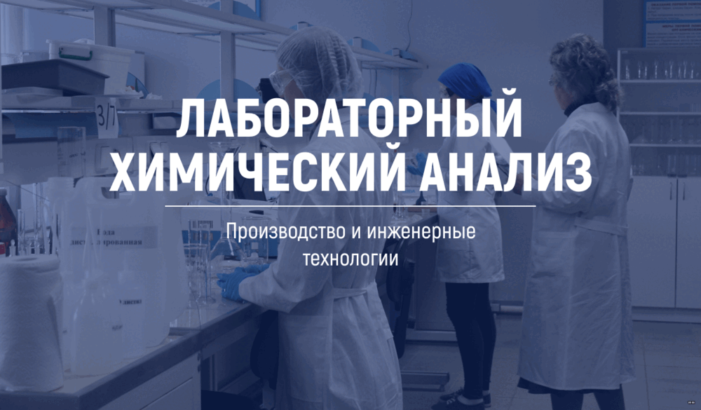

Официальный раздел
Студентам
Предоставление академического отпуска обучающимся
| Дата и номер заседания Комиссии | СНИЛС / уникальный код | Специальность / Профессия | Форма обучения | Курс | Период предоставления академического отпуска |
|---|---|---|---|---|---|
| 09.09.2026 г. №01 | 151-419-905 52 | 15.01.38 Оператор-наладчик металлообрабатывающих станков | очная | 1 | с 09.09.2026 по 26.07.2027 гг. |
| 09.09.2026 г. №01 | 169-563-926 27 | 15.01.38 Оператор-наладчик металлообрабатывающих станков | очная | 1 | с 09.09.2026 по 31.08.2027 гг. |
По вопросам предоставления академического отпуска обучающимся ГБПОУ «ВКМиС им. Н. Сердюкова» обращаться к заведующим отделениями:
Отделение машиностроения: Машурова Наталья Владимировна, тел.: 8 (8442) 32-69-39 доб. 210
Отделение связи: Галютина Елена Алексеевна, тел.: 8 (8442) 32-69-39 доб. 303
Файлы
- 1. Положение о движении контингента обучающихся ГБПОУ «ВКМиС им. Н. Сердюкова» (раздел 5) (PDF, 12.2 MiB)
- 2. Образец заявления на академический отпуск обучающемуся (DOCX, 18.6 KiB)
- 3. Образец заявления о выходе из АО обучающегося (DOCX, 19.7 KiB)
- 4. Образец заявления на академический отпуск по семейным обстоятельствам несовершеннолетнему обучающемуся (DOCX, 19.1 KiB)
Переход с платного обучения на обучение за счет бюджетных ассигнований областного бюджета
Решение комиссии по переводу студентов с платного обучения на обучение за счет бюджетных ассигнований областного бюджета
| Дата и номер заседания Комиссии | Страховой номер индивидуального лицевого счета (СНИЛС / уникальный код) | Специальность / Профессия | Форма обучения | Курс | Решение Комиссии |
|---|---|---|---|---|---|
| 15.01.2026 № 01 | 163-945-847 09 | 15.01.05 Сварщик (ручной и частично механизированной сварки (наплавки) | очная | 2 | Перевести на обучение за счет бюджетных ассигнований областного бюджета |
| 15.01.2026 № 01 | 169-527-355 10 | 13.02.13 Эксплуатация и обслуживание электрического и электромеханического оборудования (по отраслям) | очная | 2 | Перевести на обучение за счет бюджетных ассигнований областного бюджета |
Электронная образовательная среда
Электронная образовательная среда Волгоградского колледжа машиностроения и связи имени Героя Советского Союза Николая Сердюкова — это платформа, предназначенная для организации электронного обучения и применения дистанционных образовательных технологий.
На портале sdovkmis.ru сосредоточены Online-курсы учебных дисциплин и профессиональных модулей, реализуемых в колледже основных профессиональных образовательных программ, а также программ дополнительного профессионального образования и профессионального обучения.
Система направлена на организацию взаимодействия студентов и слушателей с преподавателями посредством Интернет. Для работы с платформой подойдет любое устройство с выходом в Интернет: компьютер, ноутбук, планшет или мобильное устройство.
Ресурсы для обучающихся всех специальностей
Универсальные ресурсы:
Ресурсы для обучающихся по специальностям
08.01.30 Электромонтажник слаботочных систем
- 1. Проектирование систем слабых токов
- 2. Организация и методика производственного обучения. Электромонтер-кабельщик
- 3. Электротехника. Решетчатые схемы замещения электромагнитных полей
- 4. Основы электроснабжения
- 5. Слаботочные системы
- 6. Системы ОПС
- 7. Информационно-аналитический журнал "Рубеж"
- 8. Журнал "Системы безопасности"
- 9. Журнал "Технологии защиты"
- 10. Портал по системам безопасности
- 11. Блог систем безопасности
09.01.03 Оператор информационных систем и ресурсов
- 1. Теория информации
- 2. Информатика и информационные технологии
- 3. Адаптивные информационные и коммуникационные технологии в управлении средой обитания
- 4. Инженерная 3D-компьютерная графика
- 5. Статистические методы обработки информации. Контроль качества
- 6. Проектирование и разработка web-приложений
- 7. Разработка мобильных приложений
- 8. Обучающие ролики и мастер-классы по созданию сайтов на Тильде
- 9. Уроки веб-дизайна: видео
- 10. Журнал "Информационные технологии"
- 11. Журнал сетевых решений / LAN
- 12. Журнал "Шрифт"
11.02.15 Инфокоммуникационные сети и системы связи
- 1. Основы систем связи: конспект лекций
- 2. Сети и телекоммуникации
- 3. Сети и телекоммуникации. Маршрутизация в IP-сетях
- 4. Средства телекоммуникаций
- 5. Информационные технологии
- 6. Компьютерные сети
- 7. Компьютерные сети и системы связи. Вводный курс
- 8. Информационная безопасность
- 9. Анализ и оценка рисков информационной безопасности
- 10. Основы информационной безопасности: надежность и безопасность программного обеспечения
- 11. Программно-аппаратные средства защиты информации. Защита программного обеспечения
- 12. Системы искусственного интеллекта
- 13. Проектирование информационных систем
- 14. Технический портал
- 15. Российский цифровой радиолюбительский клуб
11.02.12 Почтовая связь
- 1. Организация почтовой связи
- 2. Почтовая связь и ее особенности
- 3. Инструменты формирования имиджа предприятия почтовой связи и направления их развития
- 4. Критерии оценки конкурентоспособности предприятия почтовой связи
- 5. Разработка модели факторов формирования позитивного имиджа предприятия почтовой связи
- 6. Совершенстование процессов организации сортировки и доставки почтовых отправлений в объектах почтовой связи
- 7. Инновации в почтовой связи, состояние и перспективы развития
- 8. Совершенствование систем управления логистикой в организациях почтовой связи
13.02.13 Эксплуатация и обслуживание электрического и электромеханического оборудования (по отраслям)
- 1. Электроэнергетические системы и сети
- 2. Электрические системы и сети
- 3. Основы электроснабжения
- 4. Электроснабжение промышленных предприятий
- 5. Электроснабжение. Расчет надежности
- 6. Электроснабжение. Силовые трансформаторы
- 7. Автоматика
- 8. Технические измерения. Преобразование измерительных сигналов
- 9. Электротехника
- 10. Электротехника и электроника: бытовая техника
- 11. Электрические машины
- 12. Электрические машины и трансформаторы
- 13. Электробезопасность
15.01.05 Сварщик (ручной и частично механизированной сварки (наплавки)
- 1. Материаловедение
- 2. Метрология, стандартизация и сертификация
- 3. Техническое черчение
- 4. Технология металлов и сплавов
- 5. Неразрушающий контроль сварных соединений в машиностроении
- 6. Материаловедение машиностроительного производства
- 7. Материаловедение: методы исследования структуры и состава материалов
- 8. Технические измерения и приборы: методы анализа и контроля
- 9. Технология конструкционных материалов
- 10. Технология сварочных работ
- 11. Технология сварочных работ: сварка плавлением
- 12. Сверхскоростное резание металлов
- 13. Сопротивление материалов. Сборник заданий с примерами их решений
15.01.38 Оператор-наладчик металлообрабатывающих станков
- 1. Материаловедение
- 2. Металловедение: строение и свойства металлических расплавов
- 3. Резание материалов. Режущий инструмент
- 4. Технологическая оснастка
- 5. Резание материалов: фрезерование
- 6. Металлорежущие станки. Расчет и проектирование
- 7. Технология обработки на токарных станках
- 8. Технология работы на станках с ЧПУ
- 9. Основы программирования для станков с ЧПУ
- 10. Основы подготовки технологических операций на обрабатывающих станках с ЧПУ
- 11. Подготовка технологических процессов и программирование обработки деталей на станках с ЧПУ
- 12. Строгальные и долбежные работы
15.02.09 Аддитивные технологии
- 1. Введение в аддитивные технологии
- 2. Технология переработки пластмасс. Современные особенности технологии термоформования
- 3. Инженерная графика. CAD
- 4. Инженерная 3D-компьютерная графика
- 5. Аддитивные технологии в цифровом производстве
- 6. Аддитивные технологии: состояние и перспективы
- 7. Аддитивные технологии как инновационный тренд в развитии производства
15.02.16 Технология машиностроения
- 1. Основы технологии машиностроения
- 2. Технология машиностроения для СПО
- 3. Технология машиностроения
- 4. Технология машиностроения
- 5. Материаловедение и технология материалов
- 6. Технологическое оборудование
- 7. Технические измерения и приборы
- 8. Технология машиностроения: сборка и монтаж
- 9. Технические измерения и приборы: методы анализа и контроля
- 10. Технические измерения и приборы: методы и средства измерения
- 11. Технологические процессы в машиностроении
- 12. Резание материалов: фрезерование
- 13. Резание материалов. Режущий инструмент
- 14. Журнал "Технология машиностроения"
15.02.17 Монтаж, техническое обслуживание, эксплуатация и ремонт промышленного оборудования
- 1. Техническая термодинамика
- 2. Технические измерения и приборы: методы анализа и контроля
- 3. Технические измерения и приборы: методы и средства измерения
- 4. Теория механизмов и машин
- 5. Технические измерения и приборы
- 6. Электропривод и электрооборудование
- 7. Детали машин и основы конструирования
- 8. Техническое обслуживание и ремонт промышленного оборудования
- 9. Датчики и измерительная техника в электроэнергетике
- 10. Эксплуатация и организация ремонтов металлургического оборудования
- 11. Гидропневмопривод: следящие системы приводов
- 12. Машины-автоматы
- 13. Детали машин
- 14. Детали машин и механизмов: конструирование
- 15. Детали машин и основы конструирования. Передачи
15.02.19 Сварочное производство
- 1. Материаловедение
- 2. Метрология, стандартизация и сертификация
- 3. Техническое черчение
- 4. Технология металлов и сплавов
- 5. Неразрушающий контроль сварных соединений в машиностроении
- 6. Материаловедение машиностроительного производства
- 7. Материаловедение: методы исследования структуры и состава материалов
- 8. Технические измерения и приборы: методы анализа и контроля
- 9. Технология конструкционных материалов
- 10. Технология сварочных работ
- 11. Технология сварочных работ: сварка плавлением
- 12. Сверхскоростное резание металлов
- 13. Сопротивление материалов. Сборник заданий с примерами их решений
18.01.34 Лаборант по контролю качества сырья, реактивов, промежуточных продуктов, готовой продукции, отходов производства
Государственная итоговая аттестация
Положения о порядке проведения ГИА
Шаблоны задания ГИА
Шаблоны титульных листов
Шаблоны рамок пояснительной записки
Методические указания и комиссии
- 1. Методические указания по выполнению выпускной квалификационной работы (по программе подготовки специалистов среднего звена)
- 2. Методические указания по выполнению выпускной квалификационной работы (по программе подготовки квалифицированных рабочих, служащих)
- 3. Положение об апелляционной комиссии
- 4. Положение об условиях зачисления экспертов для прохождения промежуточной и итоговой аттестации
- 5. Положение о проведении демонстрационного экзамена с учетом требований стандартов WorldSkillsRussia
Места проведения государственной итоговой аттестации
Заседания государственной экзаменационной комиссии проводятся в методическом кабинете или учебных кабинетах по профилю специальности/профессии:
• в корпусе №1 по адресу: г. Волгоград, ул. Двинская, 13
• в корпусе №2 по адресу: г. Волгоград, ул. 64-й Армии, д. 117
Демонстрационный экзамен

- 1. Положение о проведении демонстрационного экзамена с учетом требований стандартов WorldSkillsRussia
- 2. Методика организации и проведения демонстрационного экзамена
- 3. Методические рекомендации
- 4. Электронный аттестат
- 5. План проведения ДЭ